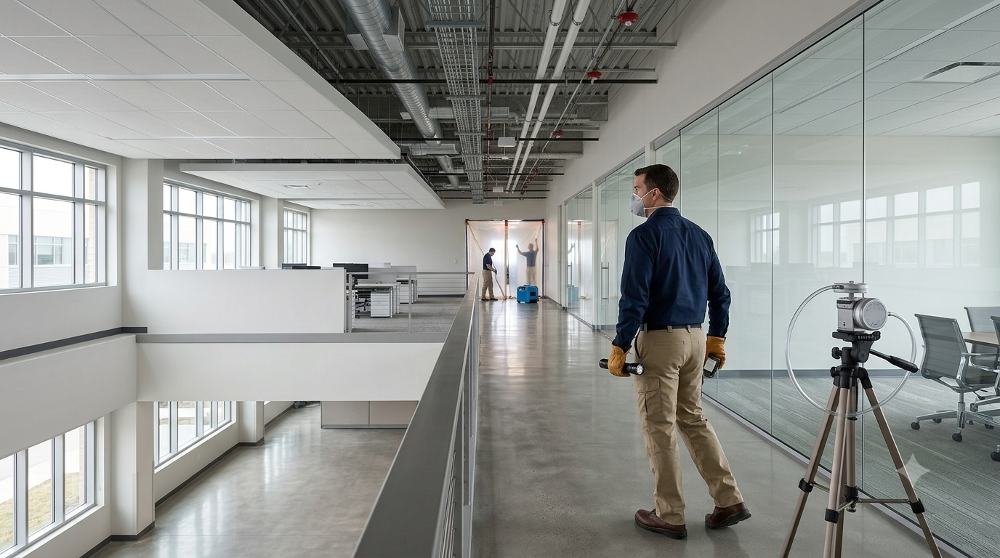

California Building Environment provides independent air clearance inspections, post-remediation visual inspections, air sample collection, and environmental consulting throughout Southern California.
Air samples collected during clearance inspections are submitted to accredited laboratories for analysis. Laboratory testing is performed by the accredited laboratory, while we provide independent inspections, documentation, and reporting.
Air clearance inspections are typically performed after asbestos abatement or other environmental remediation work has been completed. The purpose is to perform an independent visual inspection and collect air samples, when required, to document project conditions.
Collected air samples are submitted to accredited laboratories for analysis. Laboratory findings are included in a comprehensive clearance report documenting inspection observations and analytical results.
Because California Building Environment does not perform asbestos abatement or remediation services, our clearance inspections remain objective and independent.
Independent air clearance inspections are commonly performed after asbestos abatement and other environmental remediation projects to document post-work conditions. The specific requirements depend on the project scope and applicable regulations.
Independent visual inspections and clearance air sampling may be performed following asbestos abatement projects.
Post-remediation inspections help document completed work before an area is returned to normal occupancy.
Office buildings, retail centers, warehouses, and industrial facilities often require third-party clearance inspections.
Educational and healthcare facilities frequently require independent environmental verification following remediation activities.
Public agencies often require independent clearance documentation before project completion.
Owners and facility managers may request independent verification that remediation work has been completed before reoccupying affected areas.
Review project documentation, work scope, and clearance requirements before the site visit.
Perform an independent visual inspection of the completed work area to evaluate overall project conditions.
When required, representative air samples are collected using accepted industry procedures and submitted to accredited laboratories.
Inspection observations and laboratory findings are documented in a comprehensive clearance report.

Each project is unique. Our clearance inspections are tailored to the specific project requirements and may include:
No. California Building Environment performs the inspection and collects air samples when required. Samples are submitted to accredited laboratories for analysis. Laboratory testing is performed by the laboratory.
No. We provide independent inspections, air clearance testing, environmental consulting, and professional sample collection only. We do not perform asbestos abatement or remediation services.
Inspection time varies depending on the size of the work area, project requirements, accessibility, and the number of air samples required.
Turnaround time depends on the accredited laboratory and the requested analysis schedule. Results are included in the final clearance report after laboratory analysis is complete.
Property owners, contractors, project managers, schools, healthcare facilities, industrial facilities, consultants, and government agencies commonly request independent air clearance inspections.
California Building Environment provides independent air clearance inspections, professional air sample collection, and environmental consulting throughout Southern California.